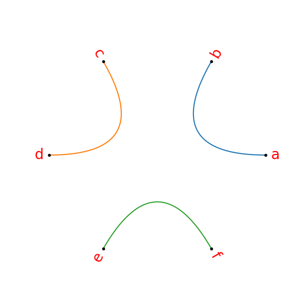

Chord Diagrams¶
-
class
techminer.chord_diagram.ChordDiagram[source]¶ Bases:
objectClass for plotting chord diagrams.
Examples
>>> chord = ChordDiagram() >>> chord.add_nodes_from('abcdef', color='black', s=10) >>> chord.add_edge('a', 'b') >>> chord.add_edges_from([('a', 'b'), ('c', 'd'), ('e', 'f')]) >>> _= plt.figure(figsize=(6, 6)) >>> _ = chord.plot(R=1, dist=0.05, fontsize=20, color='red') >>> plt.savefig('sphinx/images/chord_demo_1.png')
>>> chord = ChordDiagram() >>> chord.add_nodes_from('abcd', color='black', s=20) >>> chord.add_node('e', s=100, color='black') >>> chord.add_node('g', s=200, color='black') >>> chord.add_edge('a', 'b', linestyle=':', color='red') >>> _ = plt.figure(figsize=(6, 6)) >>> _ = chord.plot(R=1, dist=0.05, fontsize=20, color='red') >>> plt.savefig('sphinx/images/chord_demo_2.png')

-
add_edge(u, v, **attr)[source]¶ Examples
>>> chord = ChordDiagram() >>> chord.add_edge('A','B', edgeAB_prop1=1, edgeAB_prop2=2) >>> chord._edges {('A', 'B'): {'edgeAB_prop1': 1, 'edgeAB_prop2': 2}}
-
add_edges_from(edges_to_add, **attr)[source]¶ Examples
>>> chord = ChordDiagram() >>> chord.add_edges_from([(2, 3, {'linewidth': 1}), (3, 4), (5, 4)], linewidth=20) >>> chord._edges {(2, 3): {'linewidth': 1}, (3, 4): {'linewidth': 20}, (4, 5): {'linewidth': 20}}
-
add_node(node_to_add, **attr)[source]¶ Examples
>>> chord = ChordDiagram() >>> chord.add_node('A', nodeA_prop=1) >>> chord.add_node('B', nodeB_prop=2) >>> chord._nodes {'A': {'nodeA_prop': 1}, 'B': {'nodeB_prop': 2}}
>>> chord.add_node('C', nodeC_prop1=10, nodeC_prop2=20)
-
add_nodes_from(nodes_for_adding, **attr)[source]¶ Examples
>>> chord = ChordDiagram() >>> chord.add_nodes_from('abcde') >>> chord._nodes {'a': {}, 'b': {}, 'c': {}, 'd': {}, 'e': {}}
>>> chord = ChordDiagram() >>> chord.add_nodes_from('abc', linewidth=1) >>> chord._nodes {'a': {'linewidth': 1}, 'b': {'linewidth': 1}, 'c': {'linewidth': 1}}
>>> chord = ChordDiagram() >>> chord.add_nodes_from( [('a', dict(linewidth=1)), ('b', {'linewidth':2}), ('c',{}) ], linewidth=10) >>> chord._nodes {'a': {'linewidth': 1}, 'b': {'linewidth': 2}, 'c': {'linewidth': 10}}
-
{kind=link}